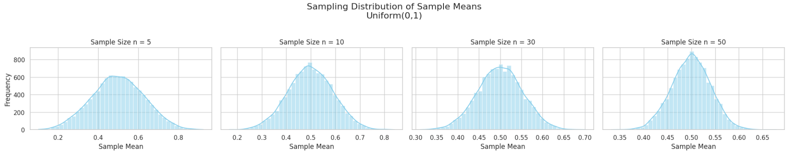
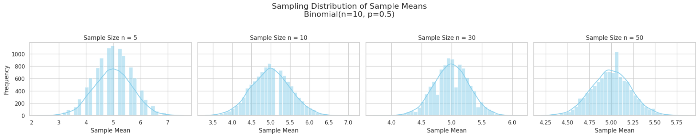
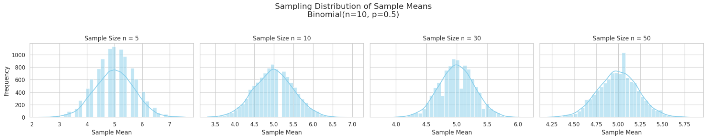

Central Limit Theorem (CLT): A Comprehensive Exploration Through Simulation
Motivation
The Central Limit Theorem (CLT) is one of the most fundamental results in probability theory and statistics. It states that:
Given a population with any distribution having a finite mean \(\mu\) and finite variance \(\sigma^2\), the distribution of the sample means approaches a normal distribution as the sample size \(n\) increases.
This theorem is the theoretical justification for using normal distributions in a wide variety of real-world statistical applications — even when the underlying data are not normally distributed.
Theoretical Background
Formal Statement
Let \(X_1, X_2, ..., X_n\) be a sequence of i.i.d. random variables with mean \(\mu\) and variance \(\sigma^2\). Define the sample mean:
Then, as \(n \to \infty\),
That is, the standardized sample mean converges in distribution to a standard normal distribution.
📏 Key Concepts
- Convergence in Distribution: The distribution of \(\bar{X}_n\) gets closer to a normal distribution as \(n\) increases.
- Sampling Distribution: The probability distribution of a sample statistic (like the mean) taken from many samples.
- Standard Error: The standard deviation of the sampling distribution of the mean:
$$ \text{SE} = \frac{\sigma}{\sqrt{n}} $$
Step 1: Population Distributions
We will generate synthetic data from three different distributions:
- Uniform(0,1): All values between 0 and 1 are equally likely.
- Exponential(λ=1): Skewed right, models waiting times.
- Binomial(n=10, p=0.5): Discrete distribution modeling number of successes in trials.
Step 2: Sampling and Visualization
For each distribution:
- Generate a large population (100,000 values)
- Sample from the population using sizes \(n = 5, 10, 30, 50\)
- Repeat 10,000 times for each sample size
- Plot histograms of sample means
We will observe how the shape of the sampling distribution changes with sample size.
Step 3: Parameter Exploration
Effect of Sample Size
- As \(n\) increases:
- The sampling distribution becomes more symmetric and bell-shaped
- The variance of sample means decreases: $$ \text{Var}(\bar{X}_n) = \frac{\sigma^2}{n} $$
Effect of Population Distribution
- Populations with higher skewness (e.g., exponential) require larger sample sizes to approximate normality.
- Discrete or multimodal populations may also take longer to converge.
Python Code for Simulation
import numpy as np
import matplotlib.pyplot as plt
import seaborn as sns
# Set plotting style
sns.set(style="whitegrid")
# Define population distributions
distributions = {
"Uniform(0,1)": lambda size: np.random.uniform(0, 1, size),
"Exponential(λ=1)": lambda size: np.random.exponential(1, size),
"Binomial(n=10, p=0.5)": lambda size: np.random.binomial(10, 0.5, size)
}
sample_sizes = [5, 10, 30, 50]
num_samples = 10000
population_size = 100000
for dist_name, generator in distributions.items():
print(f"\nSampling from: {dist_name}")
population = generator(population_size)
fig, axes = plt.subplots(1, len(sample_sizes), figsize=(20, 4), sharey=True)
fig.suptitle(f"Sampling Distribution of Sample Means\n{dist_name}", fontsize=16)
for i, n in enumerate(sample_sizes):
means = [
np.mean(np.random.choice(population, size=n, replace=False))
for _ in range(num_samples)
]
sns.histplot(means, bins=40, kde=True, ax=axes[i], color='skyblue')
axes[i].set_title(f"Sample Size n = {n}")
axes[i].set_xlabel("Sample Mean")
if i == 0:
axes[i].set_ylabel("Frequency")
plt.tight_layout(rect=[0, 0, 1, 0.95])
plt.show()

 
